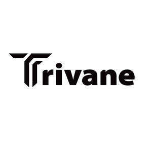

Trade Mark Journal No.2025/050 12 December 2025
UK00004303134 1 December 2025 (18)

- Class 18
- Athletic bags; All-purpose athletic bags; Athletics bags; Sports bags; Bags for sports; Sport bags; Bags for sports clothing; All-purpose sports bags; Gym bags; Bags; Luggage bags; Trunks and traveling bags; Suitcases with wheels; Suitcases; Wheeled suitcases; Backpacks with rolling wheels; Motorized suitcases; Roller suitcases; Straps for suitcases; Carry-on suitcases; Wheeled luggage; Shopping bags with wheels attached; Trunks and suitcases; Luggage; Travel bags; Bags for travel; Duffel bags for travel; Airline travel bags; Shoe bags for travel; Garment bags for travel; Bags (Garment -) for travel; Traveling bags; Travelling bags; Travel luggage; Trunks and travelling bags; Roll bags; Wheeled bags; Trolley duffels; Backpacks; Backpacks [rucksacks]; School backpacks; Backpacks for carrying infants; Backpacks for carrying babies; Baby backpacks; Small backpacks; Rucksacks; Schoolchildren's backpacks; Duffel bags; Schoolbags; Duffle bags; Knapsacks; School knapsacks; Daypacks; Bags for clothes; Bags for school; Luggage straps; Fitted protective covers for luggage; Luggage covers; Fitted belts for luggage; Covers for umbrellas; Lockable luggage straps; Toilet bags, not fitted; Travel garment covers; Protective suit carriers; Covers for parasols; Leather luggage straps; All-purpose carrying bags; Carrying bags; Bags for carrying pets; Baby carrying bags; Bags for carrying animals; Sling bags for carrying infants; Sling bags for carrying babies; Wash bags for carrying toiletries; Carry-all bags; Tote bags; Horse rugs; Horse blankets; Horse cloths; Saddle cloths for horses; Horse halters; Horse saddles; Horse bridles; Blankets for horses; Pads for horse saddles; Saddles (Pads for horse -); Travel baggage; Baggage; Baggage tags; Travel cases; Luggage, bags, wallets and other carriers; Trunks [luggage]; Luggage trunks; Trunks being luggage; Travelling trunks; Straps for luggage; Traveling trunks; Luggage tags; Tags for luggage; Plastic luggage tags.
Zhengzhou Langduo E-commerce Co., Ltd.
Representative: DY CNUK Ltd